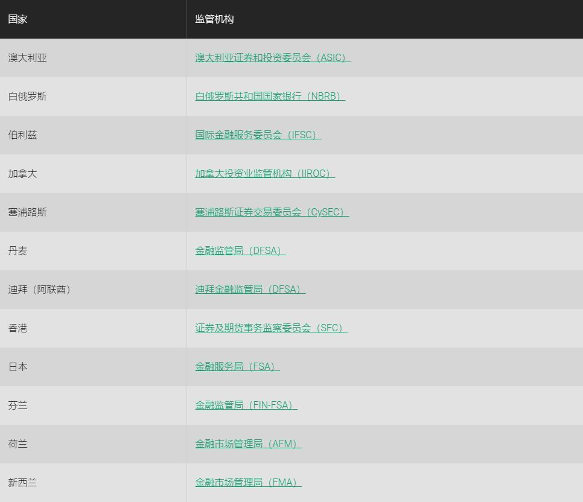
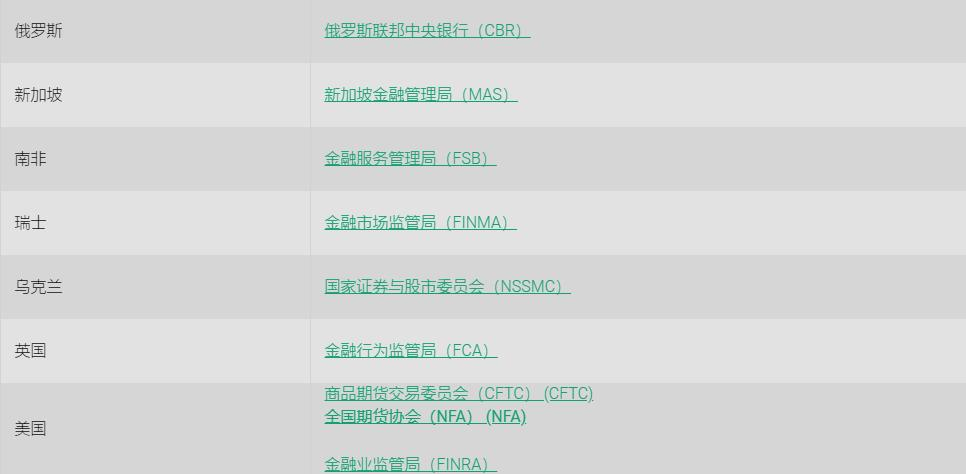

<!DOCTYPE html>
<html>
</html>
<head>
  <meta charset="utf-8">
  <meta http-equiv="X-UA-Compatible" content="IE=edge">
  <title>外汇站（fx-z.com） - 经纪商监管</title>
  <meta name="description" content="">
  <meta name="viewport" content="width=device-width, initial-scale=1">
  <meta name="robots" content="all,follow">
  <!-- Bootstrap CSS-->
  <link rel="stylesheet" href="vendor/bootstrap/css/bootstrap.min.css">
  <!-- Font Awesome CSS-->
  <link rel="stylesheet" href="vendor/font-awesome/css/font-awesome.min.css">
  <!-- Google fonts - Roboto-->
  <link rel="stylesheet" href="https://fonts.googleapis.com/css?family=Roboto:400,300,700,400italic">
  <!-- owl carousel-->
  <link rel="stylesheet" href="vendor/owl.carousel/assets/owl.carousel.css">
  <link rel="stylesheet" href="vendor/owl.carousel/assets/owl.theme.default.css">
  <!-- theme stylesheet-->
  <link rel="stylesheet" href="css/style.default.css" id="theme-stylesheet">
  <!-- Custom stylesheet - for your changes-->
  <link rel="stylesheet" href="css/custom.css">
  <!-- Favicon-->
  <link rel="shortcut icon" href="img/favicon.png">
  <!-- Tweaks for older IEs--><!--[if lt IE 9]>
    <script src="https://oss.maxcdn.com/html5shiv/3.7.3/html5shiv.min.js"></script>
    <script src="https://oss.maxcdn.com/respond/1.4.2/respond.min.js"></script><![endif]-->
</head>
<body>
  <div id="all">
    <div class="container-fluid">
      <div class="row row-offcanvas row-offcanvas-left"> 
        <!--   *** SIDEBAR ***-->
        <div id="sidebar" class="col-md-4 col-lg-3 sidebar-offcanvas">
          <div class="sidebar-content">
            <h1 class="sidebar-heading"> <a href="https://fx-z.com">fx-z.com</a></h1>
            <p class="sidebar-p">介绍外汇相关的基本知识，告诉您如何进行自己的技术面和基本面分析，讲解先进的交易理念，并且为您阐述失败交易者与专业交易者之间的真正区别。 </p>
            <p class="sidebar-p">通过这些课程的学习，您将学会如何根据自己的优势来应用情绪分析，还将了解真实世界的事件会对货币汇率产生什么影响，央行在外汇市场中所发挥的作用，以及交易者在颇受欢迎的即期外汇交易中有哪些选择方案。 </p>
            <ul class="sidebar-menu">
                <!-- Link-->
                <li class="sidebar-item"><a href="https://fx-z.com" class="sidebar-link">首页</a></li>
                <!-- Link-->
                <li class="sidebar-item"><a href="cihui.html" class="sidebar-link">外汇词汇</a></li>
                <!-- Link-->
                <li class="sidebar-item"><a href="ebook.html" class="sidebar-link">获取外汇电子书</a></li>
            </ul>
            <p class="social"><a href="https://www.cn-forextime.com/zh?partner_id=4920383" target="_blank"data-animate-hover="pulse" class="external facebook"><i class="fa fa-eur"></i></a><a href="https://www.cn-forextime.com/zh?partner_id=4920383" target="_blank" data-animate-hover="pulse" class="external gplus"><i class="fa fa-gbp"></i></a><a href="https://www.cn-forextime.com/zh?partner_id=4920383" target="_blank" data-animate-hover="pulse" class="external twitter"><i class="fa fa-rmb"></i></a><a href="https://www.cn-forextime.com/zh?partner_id=4920383" target="_blank" title="" class="external instagram"><i class="fa fa-dollar"></i></a><a href="https://www.cn-forextime.com/zh?partner_id=4920383" target="_blank" data-animate-hover="pulse" class="email"><i class="fa fa-money"></i></a></p>
            <div class="copyright text-center text-md-left">
             
              
            </div>
          </div>
        </div>
        <!--   *** SIDEBAR END ***  -->
        <!--   *** DETAIL ***-->
        <div class="col-md-8 col-lg-9 content-column white-background">
          <div class="small-navbar d-flex d-md-none">
            <button type="button" data-toggle="offcanvas" class="btn btn-outline-primary"> <i class="fa fa-align-left mr-2"></i>菜单</button>
            <h1 class="small-navbar-heading"> <a href="https://fx-z.com/2-5.html">下一篇 </a></h1>
          </div>
          <div class="row">
            <div class="col-xl-10">
              <div class="content-column-content">
                <h1>经纪商监管</h1>
          <p>
    全球的经纪商监管范围非常广泛。有些司法管辖区监管所有细节，而有些司法管辖区几乎不做任何监管。您可以根据各个国家的整体管控情况来归类经纪商监管的严格程度——在 G7 国家非常严格，在接下来 20-30 个国家的严格程度变小，在全球其它国家很松懈或者很不严格。您会在银行和税务事项中发现相应的严格程度。有些司法管辖区有意推出松懈的监管政策或低税制，以吸引经纪商行业，而其它管辖区有意推出严格的监管政策和/或高税制，以避开经纪商行业。
</p>
<p>
    更确切的是，有些国家将外汇归入“证券”这一大类监管，没有将外汇设为单独的监管目标。例如，巴林的监管机构是央行，科威特的监管机构是商会，但在迪拜，阿拉伯联合酋长国有一个完整的金融服务管理局（DFSA）。
</p>
<p>
    <strong>设有外汇监管机构的政府包括：</strong>
</p>
<p>
    
</p>
<p>
    我们也可以在列表中添加塞浦路斯。大多数政府监管机构都在网站上列出了所有注册经纪商。例如，塞浦路斯证券交易委员会（CySEC）列出了约两百家公司。ASIC——澳大利亚证券和投资委员会不提供名单，但如果您已经有经纪商名称，您可以在 ASIC 网站进行查询。挪威不对外汇经纪商做出正式批准，但列出了获批在挪威提供零售外汇服务、同时受其它国家监管的公司。
</p>
<p>
    若您居住在没有经纪行业的发展中国家，您应该始终在受监管的环境中选择一家供应商，即使这样带来的文书工作和繁琐事项会超出您真正想要处理的事务。这是因为监管机构的存在为您免除了后顾之忧，让您能够在出金或关闭账户时获得应退还给您的本金和收益。这是国家监管机构的初始目的——确保经纪商不能窃取客户的钱。
</p>
<p>
    监管机构的另一个目的是，确保经纪商不会为了产生佣金收入而怂恿客户过度交易（“挤油交易”），并且区分经纪商是中间商还是顾问。我们应该注意到，外汇价格的快速变动、24 小时开放外汇业务窗口以及每笔外汇交易量通常较小的情况都会导致交易者利用账户炒单，且未通过任何经纪商的帮助。这一点以及相对缺乏监管，是经纪商为何首先寻求外汇空间的主要原因之一。
</p>
<p>
    在美国、英国等大国，经纪商与顾问是有区别的，与之对应的许可测试和监管机构也不相同。在美国，经纪商由经纪行业的自律机构——金融业监管局直接监管。另一方面，投资顾问由证券交易委员会或商品期货交易委员会监管。在法国，这两种活动都由同一个机构（法国金融市场管理局或 AMF）监管。
</p>
<p>
    如果您只是新手，选择经纪商的黄金法则是选一家位于美国、英国或欧洲的公司。第二选择是找一家不位于监管机构所在的国家，但在本国进行经济活动的经纪商。若您是一家大型美国经纪商的客户，但您的账户恰好位于另一个较远的国家，您仍然可以依靠这家美国经纪商来处理投诉或不满。最不可取的是仅在某些热带天堂国家运营，并声称由乌克兰或迪拜等第三世界国家的机构监管的经纪商；它们可能会，也有可能不会花费精力来参与投诉解决过程。
</p>
<p>
    无论您选择哪家经纪商，请注意，监管状态的存在不能确保一流的执行力和高标准的行为，但缺少监管状态却始终是警示信号。您绝不应该选择未受到任何地方的政府机构监管的经纪商。
</p>
<p>
    <br/>
</p>
<p>
    <br/>
</p>
              </div>
            </div>
          </div>
        </div>
      </div>
    </div>
  </div>
  <!-- JavaScript files-->
  <script src="vendor/jquery/jquery.min.js"></script>
  <script src="vendor/popper.js/umd/popper.min.js"> </script>
  <script src="vendor/bootstrap/js/bootstrap.min.js"></script>
  <script src="vendor/jquery.cookie/jquery.cookie.js"> </script>
  <script src="vendor/owl.carousel/owl.carousel.min.js"></script>
  <script src="vendor/masonry-layout/masonry.pkgd.min.js"></script>
  <script src="js/front.js"></script>
</body>